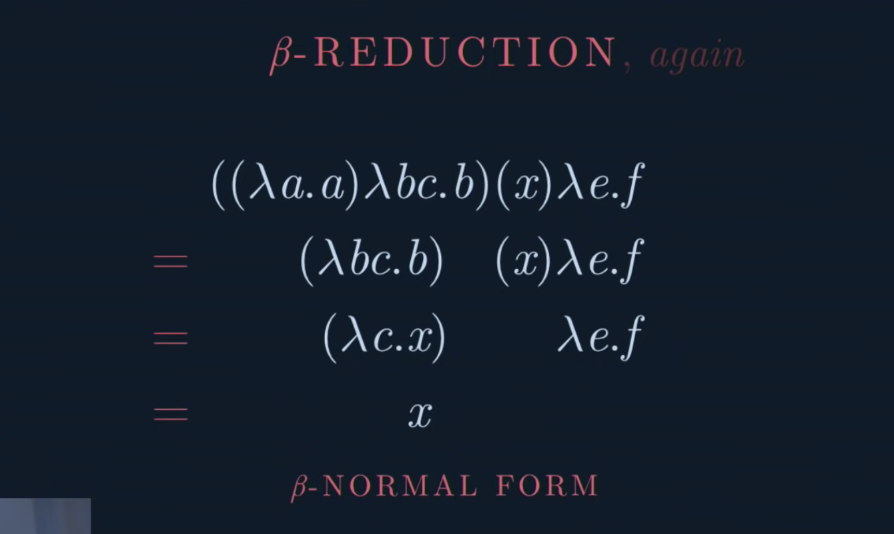
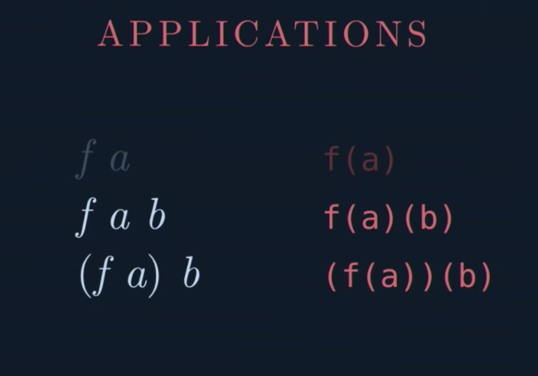

(Vi) Giới thiệu về lambda calculus
Outline
trong phạm vi bài viết này, mình sẽ giữ nguyên các thuật ngữ tiếng anh, và sẽ có chú giải về các thuật ngữ này
- Lambda structure
- Beta reduction
- Nested lambda
- Function application
- Free variable
- Combinator
- Church encoding
Giới thiệu về lambda calculus
Lambda structure
λ x . x
^─┬─^
└────── phần mở rộng của phần đầu của lambda.
λ x . x
^────── tham số duy nhất của hàm số. Tham số này móc (bind) bất kỳ
tham số nào cùng tên trong phần thân (body) của hàm.
λ x . x
^── phần thân, biểu thức mà lambda trả về khi hàm số được applied.
Chúng ta gọi x là bound variable.Beta reduction
Khi chúng ta áp dụng hàm số cho một tham số nào đó, chúng ta thay thế input cho toàn bộ các bound variables trong body của lambda.
Sau đó, chúng ta còn có thể bỏ phần head của lambda đi.
Vì phần head của biểu thức lambda nó cho biết các biến nào được bound (móc) vào lambda.
Quá trình này được gọi là beta reduction.
Để rõ hơn, chúng ta cùng xét ví dụ sau:
Giả sử chúng ta có hàm số
𝜆𝑥.𝑥hàm số trên rất quen thuộc, nó là hàm identidy, nhận vào một tham số x bất kỳ nào, thì cũng trả về chính x
Chúng ta sẽ thử làm beta reduction với số 2. Chúng ta áp dụng hàm số trên cho số 2, thay 2 vào từng bound variable (dựa vào phần head) trong thân hàm (body), sau đó chúng ta bỏ phần head. Chúng ta sẽ được kết quả là 2
# Áp dụng hàm số với giá trị 2
(𝜆𝑥.𝑥) 2
# kết quả sau cùng
2Hãy cùng xem xét một ví dụ sau:

Nested lambda
Xét vì mặt cú pháp hay ký hiệu
𝜆𝑥𝑦.𝑥𝑦tương đương với
𝜆𝑥.(𝜆𝑦.𝑥𝑦)Function application
Bạn có thể đọc thêm về function application tại đây

Free variable
Nếu chúng ta thấy tham số(biến) nào đó trong phần body của biểu thức lambda calculus, mà không nằm trong phần head của biểu thức, thì ta gọi đó là biến tự do(free variable)
ví dụ:
𝜆b.a -- a là free variableCombinator
- 1 biểu thức được gọi là combinator khi và chỉ khi hàm số hay body không tồn tại biến tự do

K va KI combinators:
Ktương đương hàmconsthayfsttrong haskell, một hàm số nhận 2 tham số và luôn trả về tham số thứ 1
K = 𝜆ab.aKIlà hàm số nhận vào 2 tham số và trả về tham số thứ 2, tương tự như hàmsndtrong haskell
K = 𝜆ab.b
Church encoding: booleans
- Nếu chung ta đặt
K = True
KI = Falsethì chúng ta có thể suy diễn ra các combinator khác NOT AND như hình sau (chi tiết cách suy diễn các bạn có thể xem clip rất hay sau)